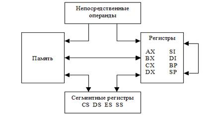
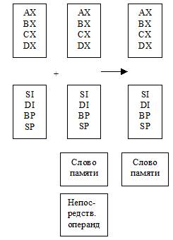
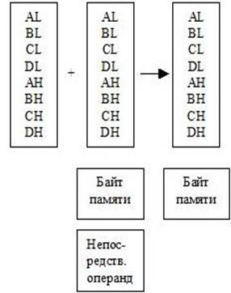
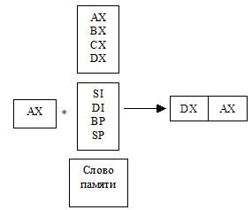
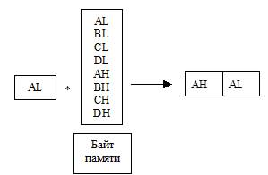
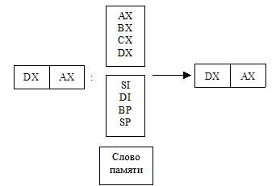
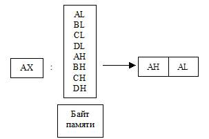
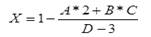
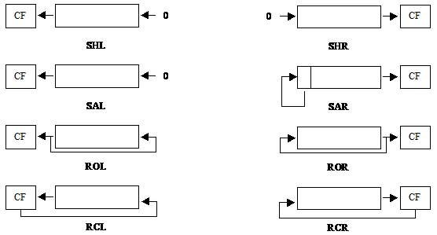

электронный ресурс по учебной дисциплине 1-40 05 01-09 "Информационные системы и технологии (в обеспечении промышленной безопасности)"
|
||
| Оглавление | Программа | Теория | Практика| Контроль знаний | Об авторах | ||
Раздел 1. Процессоры
INTEL
Тема 4
Основные команды языка ассемблер
1. Основные команды языка ассемблер.
Команда MOV – основная команда пересылки данных,
которая пересылает один байт или слово данных из памяти в регистр, из регистра
в память или из регистра в регистр. Команда MOV может также занести число
(непосредственный операнд) в регистр или память. В действительности команда MOV это целое семейство машинных команд
микропроцессора. На приведенном ниже рисунке представлены различные способы,
которыми в микропроцессоре можно пересылать данные из одного места в другое.
Каждый прямоугольник означает здесь регистр или ячейку памяти. Стрелки
показывают пути пересылки данных, которые допускает микропроцессор. Необходимо
также помнить, что все команды микропроцессора могут указывать только один
операнд памяти.
Из рисунка
видно, что запрещены пересылки из одной ячейки памяти в другую, из одного
сегментного регистра в другой, запись непосредственного операнда в память. Это
обусловлено тем, что в персональном компьютере отсутствуют соответствующие
машинные команды. Если по алгоритму необходимо произвести одно из таких
действий, то оно обычно реализуется в две команды, пересылкой через какой-нибудь
несегментный регистр. Кроме того, командой MOV нельзя менять содержимое сегментного
регистра CS. Это связано с тем, что регистровая пара CS: IP определяет адрес следующей выполняемой
команды, поэтому изменение любого из этих регистров есть ничто иное, как
операция перехода. Команда же MOV не реализует переход.

Рисунок
4.1. – Операнды команды пересылки MOV
Примеры
использования команды пересылки:
MOV Data,DI
MOV BX,CX
MOV DI,Index
MOV Start_Seg,DS
MOV ES,Buffer
MOV Days,356
MOV DI,0
Команда обмена данных XCHG
Команда XCHG меняет местами содержимое двух операндов.
Порядок следования операндов не имеет значения. В качестве операндов могут
выступать регистры (кроме сегментных) и ячейки памяти.
Примеры
использования команды XCHG:
XCHG BL,BH
XCHG DH,Char
XCHG AX,BX
Команды
загрузки полного указателя LDS и LES
Эти команды
загружают полный указатель из памяти и записывают его в выбранную пару
«сегментный регистр : регистр». При этом первое слово из адресуемой памяти
загружается в регистр первого операнда, второе в регистр DS, если выполняется команда LDS, или в регистр ES если выполняется команда LES.
Примеры
использования команд:
LDS BX,[BP+4]
LES DI,TablePtr
Команда
перекодировки XLAT
Команда XLAT заменяет содержимое регистра AL байтом из таблицы перекодировки
(максимальная длинна – 256 байт), начальный адрес которой относительно сегмента DS находится в регистреBX.
Алгоритм
выполнения команды XLAT состоит из двух этапов:
- содержимое регистра AL прибавляется к содержимому регистра BX;
- полученный результат рассматривается как
смещение относительно регистра DS. По данному адресу выбирается байт и
помещается в регистр AL.
XLAT всегда использует в качестве смещения
начала таблицы содержимое регистра BX, поэтому перед выполнением команды
необходимо поместить в BX смещение таблицы.
Пример
использования команды XLAT:
MOV BX,OFFSET Talbe
MOV AL,2
XLAT
...
Table DB ‘abcde’
Команды
работы со стеком
Как уже было
указано ранее, процессор адресует стек с помощью регистровой пары SS:SP. Помещение объектов в стек приводит к автоматическому
декременту указателя стека, а извлечение – к инкременту, т.е. он «растет» в
сторону меньших адресов памяти.
Для сохранения
и восстановления различных 16-битовых данных в стеке используются команды PUSH (протолкнуть) и POP (вытолкнуть). За кодами операций PUSH и POP следует операнд, который необходимо
поместить (извлечь) в (из) стек. В качестве операнда может выступать регистр
или ячейка памяти, которую можно адресовать, используя известные способы
адресации.
Замечание:
Команда POP CS недопустима (восстановление из стека в
регистр CS осуществляется по команде RET).
Для помещения в
стек и извлечения из стека регистра флагов используются специальные команды PUSHF и POPF соответственно.
Стек удобен для
передачи информации в подпрограммы и из них. Для этого подпрограмма может
использовать BP как указатель на область стека. Ниже
приведен фрагмент программы, демонстрирующий использование BP для доступа к параметрам, переданным через
стек.
CODE SEGMENT
...
PROC1 PROC
MOV BP,SP
;загрузка в BP текущего адреса
стека
MOV BX,[BP+4];выборка из стека 1 параметра (ca)
...
MOV BX,[BP+2];выборка из стека 2 параметра (ll)
...
RET
4 ;Возврат с удалением 4 слов из
стека
PROC1 ENDP
START:
...
MOV AX,’ca’ ;Загрузка в AX символов
MOV CX,’ll’ ;Загрузка в CX символов
PUSH AX
;Сохранение AX в стек
PUSH CX
;Сохранение CX в стек
CALL PROC1
...
CODE ENDS
Команды
ввода-вывода
Все устройства
ЭВМ принято делить на внутренние (центральный процессор ЦП, оперативная память
ОП) и внешние (внешняя память, клавиатура, дисплей и т. д.). Под вводом-выводом
понимается обмен информацией между ЦП и любым внешним устройством. В ЭВМ
передача информации между ЦП и внешним устройством, как правило, осуществляется
через порты. Порт – некоторый регистр размером в байт, находящийся вне ЦП (два
соседних порта могут рассматриваться как порт размером в слово). Обращение к
портам происходит по номерам. Все порты нумеруются от 0 до 0FFFFh. С каждым внешним устройством связан свой
порт или несколько портов, их адреса заранее известны.
Запись и чтение
порта осуществляется при помощи следующих команд:
Чтение
(ввод): IN AL, n
или IN AX, n
Запись (вывод):OUT n, AL или OUT n, AX
Номер порта n в этих командах может быть задан либо
непосредственно, либо регистром DX.
IN AX,DX
Сценарий ввода
вывода через порты существенно зависит от специфики того внешнего устройства, с
которым ведется обмен, но обычно ЦП связан с внешним устройством через два
порта: первый – порт данных, второй – порт управления и достаточно типичной
является следующая процедура обмена:
- ЦП записывает в порт управления
соответствующую команду, а порт данных – выводимые данные;
- внешнее устройство, считав эту информацию,
записывает в порт управления команду «занято» и начинает непосредственно вывод
(например, печать);
- ЦП переходит либо в режим ожидания,
опрашивая в цикле порт управления, либо занимается другой работой – до тех пор
пока в порте управления не сменится сигнал «занято»;
- внешнее устройство заканчивает вывод и
записывает в порт управления сигнал об успешном завершении или об ошибке;
- ЦП анализирует полученную информацию и
продолжает свою работу.
Арифметические команды
Все арифметические команды устанавливают
флаги CF, AF, SF, ZF, OF и PF в зависимости от результат операции.
Двоичные числа могут иметь длину 8 и
16 бит. Значение старшего (самого левого бита) задает знак числа: 0 –
положительное, 1 – отрицательное. Отрицательные числа представляются в так
называемом дополнительном коде, в котором для получения отрицательного числа
необходимо инвертировать все биты положительного числа и прибавить к нему
1. Пример:
|
Положительное: |
24=18h= |
00011000b |
|
|
Инверсное: |
|
11100111b |
|
|
Отрицательное: |
|
11101000b |
=E8h=-24 |
|
Проверка: |
24-24=0 |
00011000b 11101000b (1)00000000b |
|
Команды арифметического сложения ADD и ADC
Команда ADD выполнят целочисленное сложение двух операндов, представленных в двоичном
коде. Результат помещается на место первого операнда, второй операнд не
изменяется. Команда корректирует регистр флагов в соответствии с результатом
сложения. Существуют две формы сложения: 8-битовое и 16-битовое. В различных
формах сложения принимают участие различные регистры. Компилятор следит за тем,
чтобы операнды соответствовали друг другу. На следующих рисунках иллюстрируются
различные варианты команды ADD.

Рисунок
4.2. – 16-битовое сложение

Рисунок
4.3. – 8-битовое сложение
Команда
сложения с переносом ADC – это та же команда ADD, за исключением того, что в
сумму включается флаг переноса CF, который прибавляется к младшему биту
результата. Для любой формы команды ADD существует аналогичная ей команда ADC.
Команда ADC часто выполняется как часть многобайтной
или многословной операции сложения.
Примеры
использования команд ADD и ADC:
ADD AL,12h
ADD Count,1
ADC BX,4
ADD AX,BX
ADC Count,DI
Команды
арифметического вычитания SUB и SBB
Команда
вычитания SUB – идентична команде сложения, за
исключением того, что она выполняет вычитание, а не сложение. Для нее
верны предыдущие схемы, если в них поменять знак «+» на «–», т. е. она из первого операнда вычитает
второй и помещает результат на место первого операнда. Команда вычитания также
устанавливает флаги состояния в соответствии с результатом операции (флаг
переноса здесь трактуется как заем). Команда вычитания с заемом SBB учитывает флаг заема CF, то есть значение заема вычитается из младшего бита результата.
Примеры
использования команд SUB и SBB:
SUB AL,12h
SUB Count,1
SBB BX,4
SUB AX,BX
SBB Count,DI
Команда
смены знака NEG
Команда
отрицания NEG – оператор смены знака. Она меняет знак
двоичного кода операнда – байта или слова.
Команды
инкремента INC и декремента DEC
Команды
инкремента и декремента изменяют значение своего единственного операнда на
единицу. Команда INC прибавляет 1 к операнду, а команда DEC вычитает 1 из операнда. Обе команды могут
работать с байтами или со словами. На флаги команды влияния не оказывают.
Команды
умножения MUL и IMUL
Существуют две
формы команды умножения. По команде MUL умножаются два целых числа без знака, при
этом результат тоже не имеет знака. По команде IMUL умножаются целые числа со знаком. Обе
команды работают с байтами и со словами, но для этих команд диапазон форм
представления гораздо уже, чем для команд сложения и вычитания. На приведенных
ниже рисунках представлены все варианты команд умножения.

Рисунок 4.4.
– Умножение слов

Рисунок
4.5. – Умножение байт
При умножении
8-битовых операндов результат всегда помещается в регистр AX. При умножении 16-битовых данных
результат, который может быть длиною до 32 бит, помещается в пару
регистров: в регистре DX содержатся старшие 16-бит, а в регистре AX – младшие 16-бит. Умножение не допускает
непосредственного операнда.
Установка
флагов командой умножения отличается от других арифметических команд.
Единственно имеющие смысл флаги – это флаг переноса и переполнения.
Команда MUL устанавливает оба флага, если старшая
половина результата не нулевая. Если умножаются два байта, установка флагов
переполнения и переноса показывает, что результат умножения больше 255 и не
может содержаться в одном байте. В случае умножения слов флаги устанавливаются,
если результат больше 65535.
Команда IMUL устанавливает флаги по тому же принципу,
т. е. если произведение не может быть представлено в младшей половине результата, но только в том случае если
старшая часть результата не является расширением знака младшей. Это означает,
что если результат положителен, флаг устанавливается как в случае команды MUL. Если результат отрицателен, то флаги
устанавливаются в случае, если не все биты кроме старшего, равны 1. Например, умножение байт с
отрицательным результатом устанавливает флаги, если результат меньше 128.
Примеры
использования команд умножения:
MUL CX
IMUL Width
Команды
деления DIV и IDIV
Как и в случае
умножения, существуют две формы деления – одна для двоичных чисел без знака DIV, а вторая для чисел со знаком – IDIV. Любая форма деления может работать с
байтами и словами. Один из операндов (делимое) всегда в два раза длиннее
обычного операнда. Ниже приведены схемы, иллюстрирующие команды деления.
Байтовая
команда делит 16-битовое делимое на 8-битовый делитель. В результате деления
получается два числа: частное помещается в регистр AL, а остаток – в AH. Команда, работающая со словами, делит
32-битовое делимое на 16-битовый делитель. Делимое находится в паре регистров DX:AX, причем регистр DX содержит старшую значимую часть, а регистр AX – младшую. Команда деления помещает
частное в регистр AX, а остаток в DX.
Ни один из
флагов состояния не определен после команды деления. Однако, если частное
больше того, что может быть помещено в регистр результата (255 для байтового
деления и 65535 для деления слов), возникает ошибка значимости и выполняется
программное прерывание уровня 0.

Рисунок
4.6. – Деление слов

Рисунок
4.7. – Деление байт
Примеры
использования команд деления:
IDIV CX
DIV Count
Рассмотрим пример
программы, использующей большинство из описанных выше команд.
Пример.
Вычислить значение арифметического выражения. Все числа являются 16-битовыми
целыми со знаком. Формула вычислений следующая:

Рисунок
4.8. – Пример для расчета
Эту задачу
решает приведенная ниже программа.
;Сегмент стека
SSEG SEGMENT
STACK
DB 256 DUP(?)
SSEG ENDS
;Сегмент данных
DATA
SEGMENT
X DW
? ;Память для переменных
A DW ?
B DW ?
C
DW ?
D
DW ?
DATA ENDS
;Сегмент кода
CODE
SEGMENT
ASSUME CS:CODE, DS:DATA, SS:SSEG
START:
MOV AX,Data
;Инициализация DS
MOV DS,AX
;Вычислительная
часть
MOV AX,2 ;Загрузка константы
IMUL
A ;dx:ax = a*2
MOV BX,DX
MOV CX,AX ;bx:cx = a*2
MOV AX,B
IMUL
C ;dx:ax = b*c
ADD AX,CX
ADC DX,BX ;dx:ax = a*2+b*c
MOV CX,D
SUB CX,3 ;cx = d-3
IDIV
CX ;ax = (a*2+b*c)/(d-3)
NEG AX ;ax =
-ax
INC AX ;ax =
ax+1
MOV X,AX ;Сохранение результата
MOV AH,4CH
INT
21H
CODE
ENDS
END START
На первом этапе
программа выполняет два умножения. Так как результат умножения всегда
помещается в пару регистров DX:AX, то в примере результат первого умножения
переносится в пару регистров BX:CX перед выполнением второго умножения. Затем
программа выполняет сложение числителя. Поскольку умножение дает 32-битовые
результаты, в программе требуется сложение повышенной точности (с учетом флага
переноса). После сложения результат остается в DX:AX (числитель). Знаменатель
вычисляется в регистре CX, а затем на него делится числитель. Частное записывается
в регистр AX, затем его знак меняется на обратный и к полученному значению
прибавляется 1. На последнем этапе программа записывает результат из
регистра AX в переменную X. Остаток игнорируется.
Команды
побитовой обработки
Эту группу
команд можно разделить на две подгруппы: логические операции и операции
сдвигов. Команды AND, TEST, OR, XOR и команды сдвигов изменяют значения флагов CF, OF, PF, SF, ZF (значение флага AF становится неопределенным). Команды
циклических сдвигов изменяют только флаги OF и CF.
Команды,
выполняющие логические операции
К командам,
выполняющим логические операции, относятся AND, OR и XOR. Указанные команды выполняют
соответственно операции «логическое умножение» (конъюнкцию), «логическое
сложение» (дизъюнкцию) и «исключающее или» для двух операндов и помещают
результат на место первого операнда. К группе логических команд также относится
команда TEST, которая производит те же действия, что и команда AND, но не изменяет своих операндов, а лишь
устанавливает соответствующие флаги.
В качестве
операндов логических команд могут выступать те же операнды, что и у команд
сложения и вычитания.
Примеры
использования логических команд:
AND BL,100
TEST CX,DX
OR DX,Mask
XOR Flag,1000b
Команды,
выполняющие операции сдвигов
Команды сдвига
перемещает все биты в поле данных либо вправо, либо влево, работая либо с
байтами, либо со словами. Каждая команда содержит два операнда: первый операнд
– поле данных – может быть либо регистром, либо ячейкой памяти; второй операнд
– счетчик сдвигов. Его значение может быть равным 1, или быть произвольным. В
последнем случае это значение необходимо занести в регистр CL, который указывается в команде сдвига.
Число в CL может быть в пределах 0-255, но его
практически имеющие смысл значения лежат в пределах 0-16.
Общая черта
всех команд сдвига – установка флага переноса. Бит, попадающий за пределы
операнда, сохраняется во флаге переноса. Всего существует 8 команд сдвига: 4
команды обычного сдвига и 4 команды циклического сдвига. Команды циклического сдвига переносят
появляющийся в конце операнда бит в другой конец, а в случае обычного сдвига
этот бит пропадает. Значение, вдвигаемое в операнд, зависит от типа сдвига. При
логическом сдвиге вдвигаемый бит всегда 0, арифметический сдвиг выбирает вдвигаемый
бит таким образом, чтобы сохранить знак операнда. Команды циклического сдвига с
переносом и без него отличаются трактовкой флага переноса. Первые рассматривают
его как дополнительный 9-ый или 17-ый бит в операции сдвига, а вторые нет.
Ниже приведен
перечень команд сдвига:
- команды логического сдвига вправо SHR и влево SHL;
- команды арифметического сдвига вправо SAR и влево SAL;
- команды циклического сдвига вправо ROR и влево ROL;
- команды циклического сдвига вправо RCR и влево RCL с переносом;
Действие команд
сдвига иллюстрируют следующие рисунки.

Рисунок 4.9. – Команды сдвига
Примеры
использования команд сдвига:
SHL CH,1
SHL [BP],CL
RCL Size,1
Приведенная
ниже программа иллюстрирует использование команд побитовой обработки.
Пример. Вывести
на экран шестнадцатеричное представление кода символа «Q».
;Сегмент стека
SSEG SEGMENT STACK
DB 256 DUP (?)
SSEG ENDS
;Сегмент данных
DSEG SEGMENT
SMP DB
‘Q’
;Символ
TBL DB ‘0123456789ABCDEF’ ;Таблица
16-ричных цифр
DSEG ENDS
;Сегмент кода
CSEG SEGMENT
ASSUME CS:CSEG, DS:DSEG, SS:SSEG
START:
MOV
AX,DSEG ;Инициализация DS
MOV DS,AX
MOV AH,2
;В AH номер функции
вывода
MOV BX,0
;Вывод на экран
цифры соответствующей левой тетраде
MOV BL,Smp ;В BL символ
MOV CL,4
;В CL величина сдвига
SHR BL,CL ;Сдвиг
левой тетрады на место правой
MOV DL,Tbl[BX]
;Загрузка цифры из таблицы в DL
INT 21H
;Вывод на экран
;Вывод на экран
цифры соответствующей правой тетраде
MOV BL,Smp ;В BL символ
AND BL,00001111B ;Обнуление левой тетрады
MOV DL,Tbl[BX]
;Загрузка цифры из таблицы в DL
INT 21H
;Вывод на экран
;Вывод на экран
символа «h»
MOV
DL,’h’
INT 21H
CSEG ENDS
END START
Приведенная
программы выводит на экран шестнадцатеричный кода буквы «Q», то есть выводятся две
шестнадцатеричные цифры, соответствующие тетрадам байта, представляющего код
символа «Q».
Содержимое каждой тетрады как четырехбитового поля используется в качестве
значения индекса для таблицы байтов, каждый из которых представляет
шестнадцатеричный символ. Такой прием является распространенным способом
перевода внутреннего битового представления во внешнее символьное.
Команды сравнения и передачи управления
Команда сравнения CMP сравнивает два числа, вычитая второе из первого, также как и команда SUB. Отличие команд CMP и SUB состоит в том, что инструкция CMP не сохраняет результат, а лишь
устанавливает в соответствии с результатом флаги состояния. Основное назначение
команды CMP – это организация
ветвлений (условных переходов) в ассемблерных программах
Безусловный переход – это переход, который
передает управление без сохранения информации возврата всякий раз, когда
выполняется. Ему соответствует команда JMP. Эта команда может осуществлять переход вплоть до
32768 байт. Если заранее известно, что переход вперед делается на место,
лежащее в диапазоне 128 байт от текущего места, можно использовать команду JMP SHORT LABEL. Атрибут SHORT заставляет Ассемблер сформировать короткую форму команды перехода, даже
если он еще не встретил метку LABEL.
Условный переход проверяет текущее
состояние машины (флагов или регистров), чтобы определить, передать управление
или нет. Команды переходов по условию делятся на две группы:
- проверяющие результаты
предыдущей арифметической или логической операции Jxx;
- управляющие итерациями
фрагмента программы (организация циклов) LOOPxx.
Все условные переходы имеют однобайтовое
смещение, то есть метка, на которую происходит переход должна находится в том
же кодовом сегменте и на расстоянии, не превышающем –128 +127 байт от первого
байта следующей команды. Если условный переход осуществляется на место,
находящееся дальше 128 байт, то вместо недопустимой команды
JZ ZERO
необходимо использовать специальные
конструкции типа:
JNZ CONTINUE
JMP ZERO
CONTINUE:
Первая группа команд Jxx (кроме JCXZ/JECXZ) проверяет текущее
состояние регистра флагов (не изменяя его) и в случае соблюдения условия
осуществляет переход на смещение, указанное в качестве операнда. Флаги,
проверяемые командой, кодируются в ее мнемонике, например: JC – переход, если установлен CF. Сокращения «L» (less – меньше) и «G» (greater – больше) применяются
для целых со знаком, а «A» (above – над) и «B» (below – под) для целых без знака. Ниже в
таблице показаны команды условного перехода и проверяемые ими флаги.
Таблица 4.1. Команды условного перехода.
|
Мнемоника |
Флаги |
Комментарии |
||||
|
OF |
CF |
ZF |
PF |
SF |
||
|
Проверка флагов |
||||||
|
JE/JZ |
X |
X |
1 |
X |
X |
|
|
JP/JPE |
X |
X |
X |
1 |
X |
|
|
JO |
1 |
X |
X |
X |
X |
|
|
JS |
X |
X |
X |
X |
1 |
|
|
JNE/JNZ |
X |
X |
0 |
X |
X |
|
|
JNP/JPO |
X |
X |
X |
0 |
X |
|
|
JNO |
0 |
X |
X |
X |
X |
|
|
JNS |
X |
X |
X |
X |
0 |
|
|
Арифметика со знаком |
||||||
|
JL/JNGE |
a |
X |
X |
X |
b |
a не равно b (SF<>OF) |
|
JLE/JNG |
a |
X |
1 |
X |
b |
Z или a не равно b |
|
JNL/JGE |
a |
X |
X |
X |
b |
a равно b |
|
JNLE/JG |
a |
X |
0 |
X |
b |
не Z и (a равно b) |
|
Арифметика без знака |
||||||
|
JB/JNAE/JS |
X |
1 |
X |
X |
X |
|
|
JBE/JNA |
X |
1 |
1 |
X |
X |
CF или Z |
|
JNB/JGE |
X |
0 |
X |
X |
X |
|
|
JNBE/JG |
X |
0 |
0 |
X |
X |
не CF или не Z |
Буква Х в любой позиции означает, что
команда не проверяет флаг. Цифра 0 означает, что флаг должен быть сброшен, а
цифра 1 означает, что флаг должен быть установлен, чтобы условие было выполнено
(переход произошел).
Команды условного перехода можно разделить
на три подгруппы:
1) Непосредственно проверяющие один из флагов на равенство 0 или 1.
2) Арифметические сравнения со знаком. Существуют 4 условия, которые могут
быть проверены: меньше (JL), меньше или равно (JLE), больше (JG), больше или равно (JGE). Эти команды проверяют одновременно три флага:
знака, переполнения и нуля.
3) Арифметические без знака. Здесь также существует 4 возможных соотношения
между операндами. Учитываются только два флага. Флаг переноса показывает какое
из двух чисел больше. Флаг нуля определяет равенство.
Ниже приведен фрагмент программы,
иллюстрирующий использование команд сравнения и перехода.
CSEG SEGMENT
ASSUME CS:CSEG, DS:DSEG,
SS:SSEG
START:
...
MOV BH,X ;Загрузка в BH значения Х
MOV BL,Y ;Загрузка в BL значения Y
CMP BH,BL ;Сравнение BH и BL
JE MET1 ;Если BH=BL, то переход на MET1
JMP MET2 ;Иначе переход на MET2
MET1:
...
JMP MET3
MET2:
...
MET3:
MOV AH,4Ch
INT 21H
CSEG ENDS
END START
JCXZ отличается от других
команд условного перехода тем, что она проверяет содержимое регистра CX, а не флагов. Эту команду лучше всего применять в
начале условного цикла, чтобы предотвратить вхождение в цикл, если CX=0.
Вторая группа команд условного перехода LOOPxx служит для организации циклов в программах. Все
команды цикла используют регистр CX в качестве счетчика цикла. Простейшая из них – команда LOOP. Она уменьшает содержимое CX на 1 и передает управление на указанную метку, если содержимое CX не равно 0. Если вычитание 1 из CX привело к нулевому результату, выполняется команда, следующая за LOOP.
Команда LOOPNE (цикл пока не равно) осуществляет выход из цикла, если установлен флаг нуля
или если регистр CX достиг нуля. Команда LOOPE (цикл пока равно) выполняет обратную описанной выше проверку флага нуля: в
этом случае цикл завершается, если регистр CX достиг нуля или если не установлен флаг нуля.
Приведенный ниже фрагмент программы
иллюстрирует использование команд организации циклов.
DSEG SEGMENT
BUF DB
“0123406789”
DSEG ENDS
CSEG SEGMENT
ASSUME CS:CSEG,DS:DSEG,SS:SSEG
START:
...
MOV BX,OFFSET BUF;В BX – начало буферов
MOV CX,10
;В CX – длина буфера
MOV SI,0
M1: MOV DL,[BX+SI] ;В DL – символ из буфера
MOV AH,2
;в AH номер функции-вывода
INT 21H
;Вывод на экран
INC SI
;Увеличение индекса на 1
LOOP M1
;Оператор первого
цикла
...
CSEG ENDS
END START
Команды
работы со строками
Строкой в
Ассемблере называют последовательность байтов или слов длинной от 1 до 65535
байт. Операции со строками обеспечивают пересылку, сравнение, сканирование
строк по значению, а также пересылку строки в аккумулятор или из него. Каждая
строковая операция представленная в процессоре двумя командами: одна
предназначена для обработки строк состоящих из байт, другая – из слов (их
мнемоника различается наличием буквы B (byte) или W (word)).
Если флаг
направления DF перед выполнением команды строковой
обработки установлен в 0 (выполнена команда CLD), значение в индексном регистре
автоматически увеличивается, если в 1 (выполнена STD) – уменьшается. Индексные регистры
уменьшаются или увеличиваются на 1, если команды работают с байтами, или на 2 –
если со словами.
Команды
строковой обработки чаще всего используются с однобайтными префиксами
(префиксами повторения), которые обеспечивают многократное автоматическое
повторение выполнения команды.
Команда
сравнения строк CMPS (CMPSB, CMPSW).
Команда CMPS сравнивает значение элемента одной
строки (DS:SI) со значением элемента второй строки (ES:DI) и настраивает значения регистров на следующие элементы
строк в соответствии с флагом направления DF. Сравнение происходит так же, как и по
команде сравнения CMP. Результатом операции является установка
флагов.
Команда
сканирования строки SCAS (SCASB, SCASW).
Команда SCAS производит сравнение содержимого регистра
(AL или AX) с байтом или словом памяти, абсолютный
адрес которого определяется парой ES:DI, после чего регистр DI устанавливается на соседний элемент
памяти (байт или слово) в соответствии с флагом DF. Команда SCAS используется обычно для поиска в
строке (ES:DI) элемента заданного в регистре AL или AX.
Команда
пересылки строки MOVS (MOVSB, MOVSW).
Команда MOVS пересылает поэлементно строку DS:SI в строку ES:DI и настраивает значения индексных регистров
на следующий элемент строки.
Команда
сохранения строки STOS (STOSB, STOSW).
Команда STOS заполняет строку, содержащуюся по адресу ES:DI, элементом из регистра AL или AX. На флаги команда не влияет
Команда
загрузки строки LODS (LODSB, LODSW).
Команда LODS записывает в регистр AL или AX содержимое ячейки памяти, адрес которой
задается регистрами DS:SI. Флаги не меняются.
Префиксы
повторения.
В системе
команд процессора имеются команды без операндов, которые называются префиксами
повторения:
REPE
(повторять, пока равно);
REPZ
(повторять, пока ноль);
REP
(повторять);
REPNE
(повторять, пока не равно);
REPNZ
(повторять, пока не ноль).
Префиксы
повторения ставятся перед строковыми командами обязательно в той же строке,
например:
REPE CMPB
Префикс
использует регистр CX как счетчик циклов. На каждом этапе цикла
выполняются следующие действия:
1) Проверка CX. Если он равен 0 – выход из цикла и
переход к следующей команде.
2) Подтверждение любых возникающих
прерываний.
3) Выполнение указанной строковой операции.
4) Уменьшение CX на единицу, флаги при этом не изменяются.
5) Проверка флага ZF, если выполняется строковая операция SCAS или CMPS. Если условие повторения цикла не
выполняется – выход из цикла и переход к следующей команде. Выход из цикла,
если префиксом является REPE и ZF=0 (последнее сравнение не совпало) или
используется префикс REPNE и ZF=1 (последнее сравнение совпало).
6) Изменение значения индексных регистров в
соответствии со значением флага направления и переход на начало цикла.
Фрагмент
программы, иллюстрирующий работу со строковыми данными, приведен ниже.
CLD
;DF=0
LEA SI,s1
;DS:SI=начало s1
LEA
DI,s2 ;ES:DI=начало s2
MOV CX,n ;CX=длинна строк
REPE CMPSB
;сравнение, пока элементы равны
JNE
NoEq ;если s1<>s2 (ZF=0), то на NoEq
...
NoEq:
...
Команды
управления процессором
К командам
управления процессором чаще всего относят команды работы (установка и очистка)
с флагами. Среди них наиболее часто приходится использовать следующие.
Команда CLC устанавливает значение флага переноса CF, равное нулю. Все остальные флаги и
регистры остаются неизменными.
Команда CMC изменяет значение флага переноса CF на противоположное. Другие флаги остаются
без изменений.
Команда STC устанавливает флаг переноса в единицу.
Команда CLD очищает флаг направления DF. Все остальные флаги и регистры остаются
неизменными. После выполнения CLD используемые строковые операции будут
увеличивать индексный регистр (SI или DI).
Команда STD устанавливает флаг направления DF в единицу, что заставляет все последующие
строковые операции уменьшать при их выполнении индексные регистр (SI или DI).
Команда CLI очищает флаг прерываний, в результате чего
процессор не распознает внешние маскируемые прерывания.
Команда STI устанавливает флаг разрешения прерываний FI в единицу. После этого при завершении
работы следующей команды процессор может выполнять обработку внешних
прерываний, если эта команда снова не сбросит флаг прерываний.
Содержание
| (С) БГУИР |